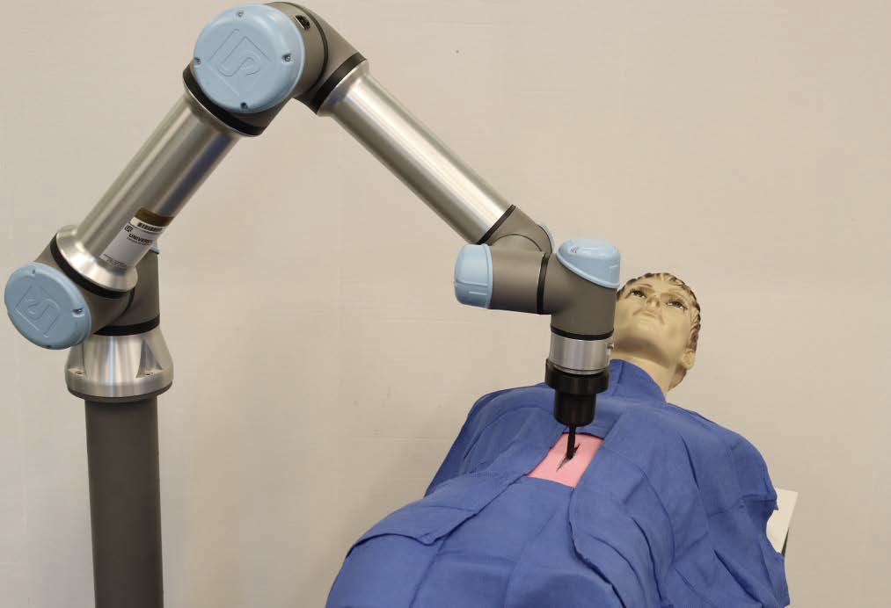

Research Areas
Dexterous Hands
Notre Dame PAIR
Tactile Sensing
VisTac · VibTac · FibTac
Soft Robotics
Bio-inspired · Compliant
Underwater Robots
Trimodal · Field-ready
Learning & Perception
Sensor fusion · Inference
Projects



▶ Click to watch demoGripper hardwareSensing overview
npj Robotics · Nature Portfolio · Aug 2026 · DOI: 10.1038/s44182-026-00112-0
FibTac: A Fiber-Based Pneumatic Gripper with Embodied Tactile Sensing
Bio-inspired by biological whiskers, FibTac unifies tactile sensing and grasping in a single fiber-embedded silicone structure. An internal camera captures fiber-tip motion for distributed feedback. Works in air and underwater, lifts 186 g, and achieves ~90% accuracy across liquid classification, object recognition, and underwater flow estimation.

IEEE Transactions on Haptics · 2025 · DOI: 10.1109/TOH.2025.3561049
VibTac: High-Resolution, High-Bandwidth Tactile Sensing for Multi-Modal Perception
Vision-based tactile finger capturing normal force, shear, vibration, and texture simultaneously. The V-TAP gripper won 2nd Prize at ASME MRC and was an IROS 2026 Best Paper Finalist.

IEEE Sensors Journal · Vol. 23 No. 20 · 2023 · DOI: 10.1109/JSEN.2023.3310918
VisTac: Toward a Unified Multimodal Sensing Finger for Robotic Manipulation
Integrates visual and tactile sensing in a single fingertip via a controllable-transparency elastomer — enabling simultaneous 3D localization and tactile manipulation from one device.
Advanced Robotics Research · Wiley · 2025 · DOI: 10.1002/adrr.202500117
TacScope: A Miniaturized Vision-Based Tactile Sensor for Surgical Applications
Miniaturized tactile sensor for minimally invasive surgical tools. Reconstructs subsurface geometry in soft media, enabling tactile feedback where conventional sensors cannot fit.


Team: Patel, Athar, Vivek, Hillyer, Nguyen, ShelarProf. Yu She, project lead
Patent-Pending · NSF-funded · Purdue University · 2026
Trimodal Underwater Robot: Drift, Glide, and Thrust in a Single Platform
Integrates passive drifting, buoyancy-driven gliding, and thruster-driven propulsion in one compact robot. Designed for ocean monitoring, infrastructure inspection, glacier-melt exploration, and search-and-rescue.

IROS 2020 · DOI: 10.1109/IROS45743.2020.9341338
Vacuum-Driven Auxetic Switching Structure and Its Application on a Gripper and Quadruped
Vacuum-actuated auxetic switching units with soft rotary actuators create adaptive grippers and quadruped locomotion systems via stiffness tuning and structural reconfiguration.